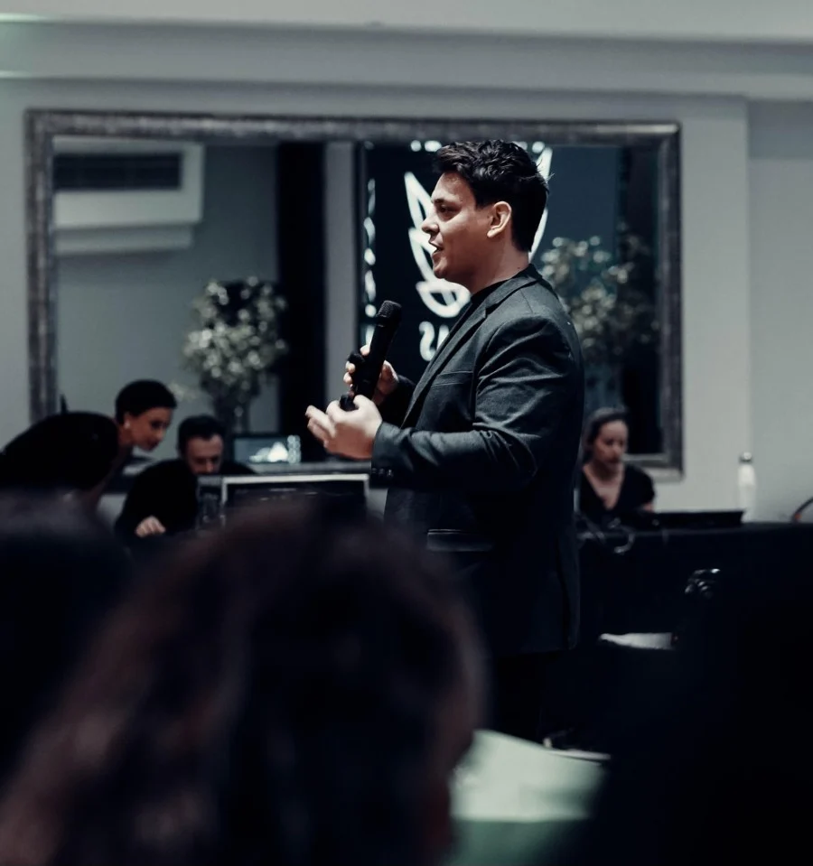

Branding antes da primeira conversa.
O que um cliente já entendeu sobre você antes de sentar à mesa? Nesta palestra, Sandro usa fotografias e exemplos de marcas pessoais para mostrar como uma escolha de cenário, gesto ou linguagem muda a percepção de quem está do outro lado.
Consultar agenda

O que sua marca faz o público perceber?
Posicionamento. Como definir a ideia que o público deve associar ao seu nome.
Narrativa visual. Como transformar situações reais da rotina em fotografias que contam uma história.
Rebranding. Uma leitura do feed de Lincoln Nunes antes e depois do projeto, com atenção ao que mudou na linguagem visual.
Sobre o palestrante
Sandro Bello é pesquisador, fotógrafo há mais de 20 anos e autor de A Mente que Habita o Branding. Sua pesquisa aproxima imagem, comportamento humano e decisões de negócios. Tem formação em hipnose e PNL Master e atua como negociador de reféns.
É CEO da Revista Players, da agência de palestrantes Talkers e do Bannkers Club.